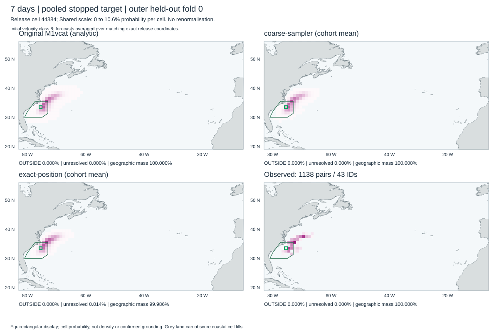
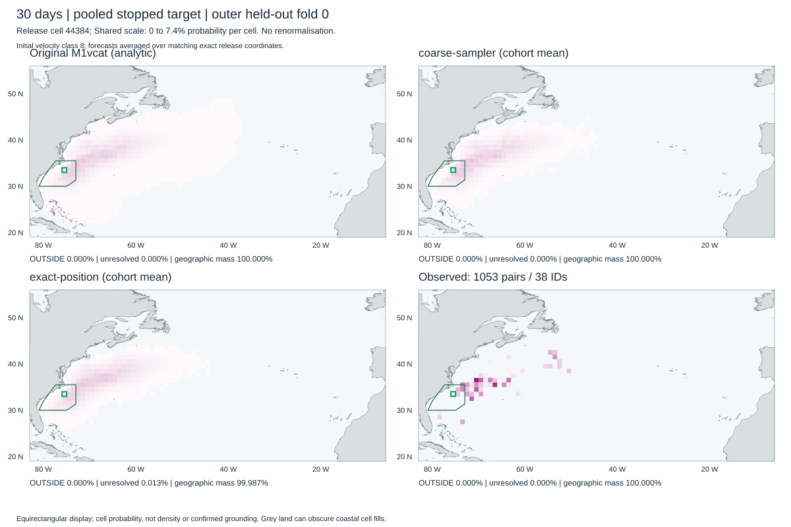

Frozen development folds and parameters. Lower S is better. Finite-ensemble footprint diagnostics are approximate. No final-test claim.
| horizon_days | model | eligible_pairs | independent_ids | S_estimate | S_issued | repeat_range | U_mass_pct | E_mass_pct | issued90_hit_pct | issued90_available_pct | issued90_cells |
|---|---|---|---|---|---|---|---|---|---|---|---|
| 7 | coarse-sampler | 303288 | 385 | 0.921836 | 0.950927 | 4.48113e-05 | 0 | 0 | 76.4359 | 100 | 16.0044 |
| 7 | exact-position | 303288 | 385 | 0.914248 | 0.942757 | 0.000249969 | 0.328133 | 0.000788236 | 76.4036 | 99.1678 | 14.0593 |
| 7 | old-exact | 303288 | 385 | 0.921873 | 0.921873 | 0 | NaN | NaN | NaN | NaN | NaN |
| 30 | coarse-sampler | 268998 | 337 | 0.985336 | 1.01614 | 8.7691e-06 | 0 | 0 | 33.0476 | 100 | 26.4858 |
| 30 | exact-position | 268998 | 337 | 0.985268 | 1.01602 | 0.000161636 | 0.530046 | 0.00654048 | 33.745 | 98.7097 | 26.0748 |
| 30 | old-exact | 268998 | 337 | 0.985249 | 0.985249 | 0 | NaN | NaN | NaN | NaN | NaN |
Full method and limitations · Repeat scores · Paired ID intervals

